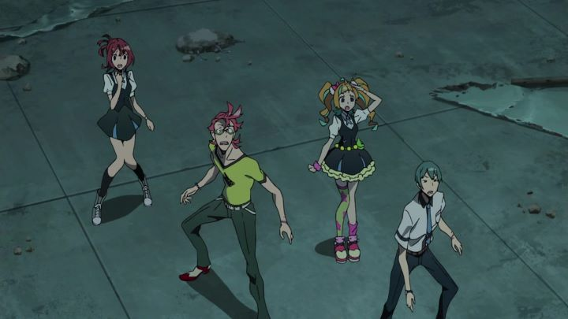

I still remember when Studio Trigger first formed, with ex-members of Gainax, a highly-regarded anime studio. "Kill la Kill" was their first big anime series, and for the most part, it was a great premiere show that maintained the style and themes expected from the artists. But how could they follow-up from that? Even Gainax didn't have many notable hits outside "Neon Genesis Evangelion" and "Gurren Lagann." For Trigger, "Kiznaiver" would be that next big show, notably written by Mari Okada, an increasingly popular anime script writer for her themes of romance and complex emotions ("Anohana," the film "Maquia," and many others owe their success to her vision). "Kiznaiver" represents a lot of the story themes and visual style that the two are known for, but it's not a great fit for either of them.The story is set in a Japanese town secretly labelled as an "experimental city." It was designed to help foster experimentation of the "Kizna" system, something that seems to be known by most of the adults in town (many of them are directly involved in it), but is kept secret from the rest of the world. It hypothesizes that if people were able to feel each other's raw feelings, including the pain caused by each other, than it would lead to world peace. In addition, if one person's pain could be evenly distributed to others and away from the source, it would make lives more barable, to share life's burdens. At the beginning of the show, we see 6 (soon becoming 7 in total) high school students get abducted and undergo an operation against their will to be used for this experiment, marked by a scar on their wrist. The technology allows the teenagers to feel each other's physical pain, and even their complex emotions. Between returning to school and undergoing a handful of "tests" by the staff running the thing, they have to survive the summer dealing with each other, until it eventually wears off on its own. As a comparison, "Kiznaiver" feels like a mixture of "FLCL," "Evangelion," and "Kokoro Connect." Unfortunately, the writing in particular isn't as good as any of those other series. In fact, the premise is nearly identical to "Kokoro" (which pre-dates it by four years), and like the big flaw of that series, the explaination and motivation to how the magic of this emotion-system came to be is disappointing. But in "Kiznaiver," there's a bigger issue of subtlety. The general theme of teenagers bonding, either as friends or lovers, and baring their emotions on the floor, is a very common one in anime, and the tendency in anime to go bold instead of being delicate is one of its strengths (as far as the otaku-fanbase is concerned). Trigger in particular is loud and colorful with character emotions. But here, characterization and dialogue is so broad and wild that the show becomes ridiculous and nonsensical.Take the seven teenagers: the main guy is a white-haired kid defined by having a lack of emotions, not reacting to pain or despair of any manner. Another dude has bright red, spiky hair, a confident personality that makes him seem as though he came straight out of an action-anime, a contrast to the people and world around him. Another girl has rainbow colored-hair, speaks about herself in third-person, and admits to acting "eccentric" as an attempt to make more friends (and after admitting the secret, proceeds with no change). And one guy is a masochist, turned on by pain, secretly enjoying the "Kizna" system to the fullest, despite wishing no ill-will or pain to the others. At the core of it all is a quiet woman leading the research team, with long blue hair, speaking in nonsensical riddles and metaphors to attempt to explain the deep meaning of what they are doing, in a manner that makes no sense at all to the viewer. A cast of colorful characters is great and all, and the show leans a lot into comedy (be it from butting heads with each other, or from the visual of dozens of mascot-suit characters chasing them with axes to trigger more extreme emotions), but this ruins any aspect of the science-fiction and dramatic elements.  Aniplex USA's American release included an English dub, a nice addition to go along with a slightly more reasonable Bluray price (still about double what any other company would sell the season for). But it further highlights how poor character traits and writing affects the show; the dub is one of the worst I can remember from a recent production. After all, how could one convincingly act as characters this cartoonish (either with 0% or 110% emotion and nothing in between) with believable empathy? How could one deliver profound dialogue about how world peace and human relationships if the actor themselves, let alone anyone else, couldn't understand what they were talking about? The Japanese dub is certainly the way to go here, but even then, the story simply isn't as deep or meaningfull as it thinks it is. The big thing that remains in tact with "Kiznaiver" is the romantic-drama. Artificially drawn-out as it may be, the teenagers still reveal secrets, and a couple romantic triangles form. Again, nothing is secret or internal, so characters reveal they are in love with each other quickly, and learn quickly if the other side doesn't have the same emotions. Despite every effort to the contrary, I wanted to see if these kids would turn out all right. I hate and love these stupid teens. It is anime after all, so it does that part right, even if the side-effect is that the rest of the story falls apart. And admittedly, the show is funny, helping elevate things. Finally, the production values help a lot with "Kiznaiver." Bright colors pop, and character designs are bold and distinctive. It's the type of wild style you'd expect from the makers of "Kill la Kill," grounded just slightly to bring it to a modern-Japanese setting. Character animation is energetic and expressive, far more than your typical anime series. The soundtrack is pretty good too, but only the background music... the opening and ending themes, set against a generic psychedelic animated pattern, seem like an afterthought. This adds to make the series enjoyable to watch, writing be darned. At the end of the final episode (in the dub at least), there's a line uttered that goes something like this, when one of the friends looks at a photo-booth print of the gang together: "You're eyes are all bigger, and you're all whiter than in real life... but the bonds are real." This seems like a backhanded message to the anime-obsessed otaku audience that make up most of "Kiznaiver's" viewers, to remind them that while anime is exagerrated to the point of being distracting, the emotional themes they convey come from a real place and can be part of your real life. That's a flat-out lie, and can be misconstrued easily: don't start acting eccentric and yelling out your feelings in public. But as long as you don't take the show as seriously as it does, "Kiznaiver" is still fun in its flamboyancy, and the art design makes it worthwhile.
- "Ani" More reviews can be found at : https://2danicritic.github.io/ Previous review: review_Kino's_Journey Next review: review_Kizumonogatari_-_Tekketsu,_Nekketsu,_Reiketsu